Основные пиктограммы
Общие пиктограммы в навигаторах
| Пиктограмма | Обозначение |
|---|---|
| Обозначает уровень проекта. | |
 Без структурных идентификаторов |
Все устройства не имеющие структурных идентификаторов. |
 Без ОУ |
Все устройства не имеющие ОУ. |
| Уровень структуры проекта. Функциональное присвоение | |
| Уровень структуры проекта. Установка | |
| Уровень структуры проекта. Место сборки | |
| Уровень структуры проекта. Место установки | |
| 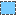 | Уровень структуры проекта. Номер установки |
| Уровень структуры проекта. Определено пользователем | |
| Предшествующая цифра | |
| Префикс / буквенное обозначение | |
| Счетчик | |
| Подсчетчик | |
| Устройство |
Неразмещенные объекты в навигаторах
| Пиктограмма | Обозначение |
|---|---|
| Главная функция, вид представления "Многополюсный" | |
| Главная функция, вид представления "Однополюсный" | |
| Вспомогательная функция, вид представления "Многополюсный" | |
| Вспомогательная функция, вид представления "Однополюсный" | |
| Перекрытая главная функция. | |
| 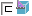 | Перекрытая вспомогательная функция. |
| Релевантная для безопасности функция. | |
| Главная функция с защитой устройства. | |
| Вспомогательная функция / сегмент с защитой устройства. | |
| 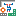 | Объект планирования с определенным макросом и защитой устройства. |
| Главная функция с защитой от изменений. | |
| Вспомогательная функция / сегмент с защитой от изменений. | |
| 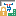 | Объект планирования с определенным макросом и защитой от изменений. |
| Шаблон функции. | |
| Черный ящик, блоки ПЛК (главная функция). | |
| Перекрытый черный ящик, блоки ПЛК (главная функция). | |
| 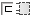 | Черный ящик, блоки ПЛК (вспомогательная функция). |
| Экранирование (главная функция). | |
| 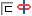 | Экранирование (вспомогательная функция). |
| Определение кабеля (главная функция). | |
| 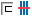 | Определение кабеля (вспомогательная функция). |
| Определение штекера (главная функция). | |
| Перекрытое определение штекера (главная функция). | |
| Определение штекера (вспомогательная функция). | |
| Определение клеммника (главная функция). | |
| Перекрытое определение клеммника (главная функция). | |
| 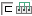 | Определение клеммника (вспомогательная функция). |
| Распределенная клемма. | |
| 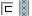 | Канал. |
| 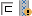 | Канал с релевантным для безопасности выводом устройства. |
| Изделие. | |
| Изделие узла. | |
| Изолированный конец соединения. | |
| Неверная функция. Данная пиктограмма после проверки данных проекта показывает, что функция содержит противоречивые или неполные данные. |
Размещенные объекты в навигаторах
| Пиктограмма | Обозначение |
|---|---|
| Главная функция, вид представления "Многополюсный" | |
| Главная функция, вид представления "Однополюсный" | |
| Вспомогательная функция, вид представления "Многополюсный" | |
| Вспомогательная функция, вид представления "Однополюсный" | |
| Вспомогательная функция, вид представления "Парная перекрестная ссылка" | |
| Вспомогательная функция, обзорное размещение, вид представления "Обзор" | |
 |
Главная функция, обзорное размещение, вид представления "Обзор" |
| Функциональная главная функция (для блок-схем рабочего процесса), вид представления "Функциональный" | |
| Функциональная вспомогательная функция (для блок-схем рабочего процесса), вид представления "Функциональный" | |
| Перекрытая главная функция. | |
| Перекрытая вспомогательная функция. | |
| Релевантная для безопасности функция. | |
| Главная функция с защитой устройства. | |
| Вспомогательная функция / сегмент с защитой устройства. | |
| 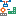 | Объект планирования с определенным макросом и защитой устройства. |
| Главная функция с защитой от изменений. | |
| Вспомогательная функция / сегмент с защитой от изменений. | |
| 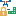 | Объект планирования с определенным макросом и защитой от изменений. |
| Черный ящик, блоки ПЛК (главная функция). | |
| Перекрытый черный ящик, блоки ПЛК (главная функция). | |
| Черный ящик, блоки ПЛК (вспомогательная функция). | |
| Экранирование (главная функция). | |
| Экранирование (вспомогательная функция). | |
| Определение кабеля (главная функция). | |
| Определение кабеля (вспомогательная функция). | |
| Определение штекера (главная функция). | |
| Перекрытое определение штекера (главная функция). | |
| Определение штекера (вспомогательная функция). | |
| Определение клеммника (главная функция). | |
| Перекрытое определение клеммника (главная функция). | |
| Определение клеммника (вспомогательная функция). | |
| Распределенная клемма. | |
| 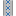 | Канал. |
| 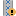 | Канал с релевантным для безопасности выводом устройства. |
| Сеть. | |
| Точка определения сети. | |
| Размещение изделия, вид представления "Компоновка электрошкафа" или "Компоновка электрошкафа подробно". | |
| Изолированный конец соединения. | |
 |
Неверная функция. Данная пиктограмма после проверки данных проекта показывает, что функция содержит противоречивые или неполные данные. |